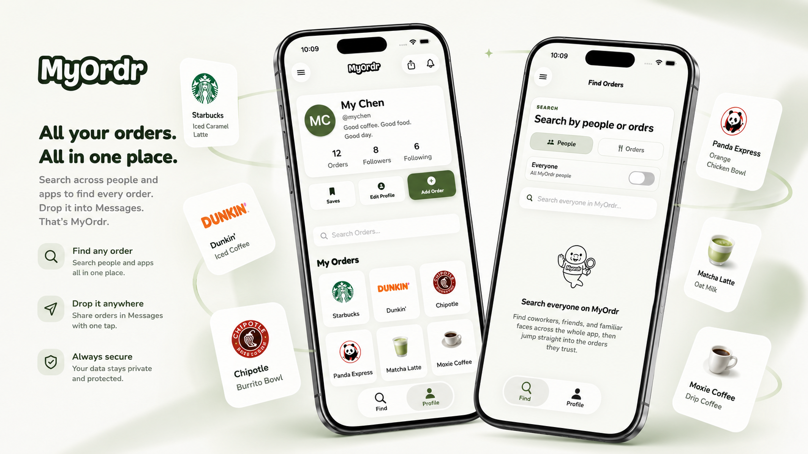
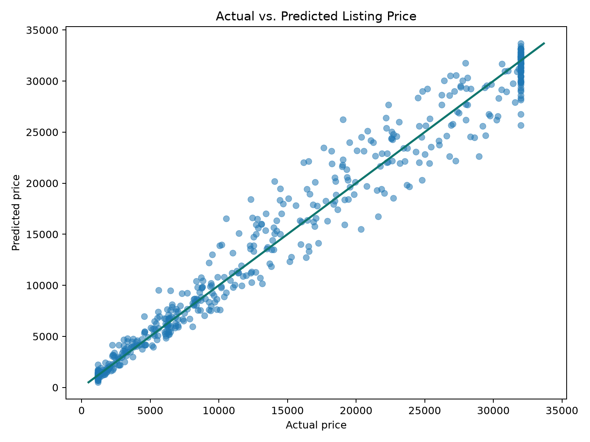

Product Build / Mobile Analytics
MyOrdr
Cross-platform iOS and Android social ordering app with a Supabase relational database, product analytics, relevance-scored search, sharing flows, notifications, and deployed web infrastructure.
Strategic Analytics / Data Science
I turn complex business data into analytics products: models, API pipelines, automations, and executive dashboards that help teams act.
Focus
My work sits between data science, BI, and product thinking: SQL models, Python workflows, executive dashboards, risk segmentation, and user-facing apps.
MyOrdr shows the product-building side. The Buell and REIT projects show the public machine learning side: reproducible models with code, evaluation, visuals, offline reports, and working demos.
Main Projects

Product Build / Mobile Analytics
Cross-platform iOS and Android social ordering app with a Supabase relational database, product analytics, relevance-scored search, sharing flows, notifications, and deployed web infrastructure.

Regression / Pricing
End-to-end motorcycle marketplace model with synthetic data, price prediction, model comparison, explainability, a Streamlit app, and a no-server one-file report.

Classification / Risk
Diversified fake REIT portfolio classifier that screens assets as healthy, watchlist, or at risk using lease, financial, tenant, and market signals.
Supporting Projects
STORE Capital
SQL models and Power BI dashboards for portfolio health, forecasting, and asset-level risk decisions.
STORE Capital
Automated lead validation workflow using database records, third-party APIs, AI model calls, and quality guardrails.
STORE Capital
Reworked queries and dimensional models to cut refreshes from 20+ minutes to under 2 minutes.
Education Elements
Analyzed student survey data and built dashboards for engagement, belonging, and performance trends.
Education Elements
Automated repeatable visuals and client-ready reporting workflows for executive-facing deliverables.
Toolkit
Python, pandas, NumPy, matplotlib, seaborn, SQL, regression analysis, exploratory data analysis, probability analytics.
Power BI, Tableau, Looker, DAX, dashboard design, executive reporting, stakeholder presentations.
SQL Server, dimensional models, fact tables, slowly changing dimensions, validation checks, and reliable reporting datasets.
Requirements gathering, documentation, forecasting support, process improvement, automation, and clear communication.
Flutter, Dart, Supabase, relational product databases, search relevance logic, notifications, sharing flows, Netlify, Cloudflare, and Resend.
Contact
I’m open to data analyst, data scientist, BI, and analytics engineering opportunities where measurable business impact matters.